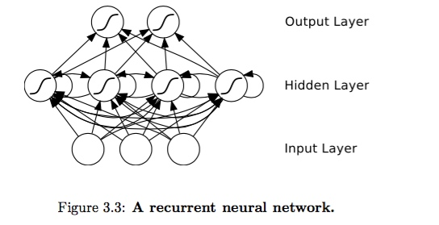
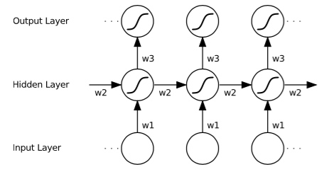

本文推导了RNN的前馈和反馈过程公式。
1. Introduction


输入一个时间序列X(I,T),输出一个时间序列Y(K,T), 时间t+1时刻的神经元会利用到t时刻的输出值。
2. Forward Pass
前馈从输入层到输出层
考虑一个RNN:
1. 输入层为I个神经元，序列长度为T。则输入x维度为(I,T),维度不考虑batch_size
2. 隐层(hidden layer)有H个神经元
3. 输出层有K个神经元.输出维度为(K,T)
输入为\(x:\{x^1,x^2,...,x^T\}\),其中\(x^t = \{x_1^t,x_2^t,...,x_I^t\}\)。则\(x_i^t\)为时间t第i个神经元的输入。
对于第L层，\(a_i^t\)为这一层的输入，\(b_i^t\)为这一层的输出。这一层的权重\(W = \{w_{ij}\}_{h\times k}\),h为L-1层的神经元个数，k为L层的神经元个数。\(w_{ij}\)为第L-1层第i个神经元与第L层第j个神经元的连接权重。
每一层的输入输出如下。\(\theta(x)为激活函数，rnn中一般为sigmoid。\theta'(x) = \theta(x)(1-\theta(x))\)
Hidden Layer:
1. Input(x): \(x: \{x_i^t\}\)
2. Output(\(b_h^t\)):
\(b_h^t = \theta(a_h^t)\)
Output Layer:
1. Input(\(b_h^t\))
2. Output:
\(a_k^t = \sum_{h=1}^Hw_{hk}b_h^t\)
\(b_k^t = \theta(a_k^t)\)
写成矩阵形式为
\(A_H^t = W_1^TX^t+ W_2^TA_H^{t-1}\), shape: (H,1)
\(B_H^t = \theta(A_H^t)\), shape:(H,1)， \(\theta(V)\)表示对矩阵\(V\)的每个元素\(v_{ij}\)用\(\theta(v_{ij})\)进行计算
\(A_K^t = W_3^TB_H^t\), shape: (K,1)
\(B_K^t = \theta(A_K^t)\), shape:(K,1)
注意到求\(A_H^t\)需要依赖于\(A_H^{t-1}\)，所以隐层在时间维度T是无法用矩阵并行运算而需要从t=0到t=T-1依次计算。但是反向求梯度的时候可以将时间维度T并行起来。
3. Backward Pass
反向传播从输出层反向传梯度到输入层
输出层: with respect to Layer Output(\(b_k^t\)), Parameter(\(w_{hk}\)), Input(\(b_h^t \))
\(\delta(b_k^t) = \frac{\partial L}{\partial b_k^t}\)
\(\delta(a_k^t) = \theta'(a_k^t)\delta(b_k^t)\)
\(\delta(w_{hk}) = \frac{\partial L}{\partial w_{hk}} = \sum_{t=1}^{T}\frac{\partial L}{\partial a_k^t}* \frac{\partial a_k^t}{w_{hk}} = \sum_{t=1}^{T} \delta(a_k^t)b_h^t \)
隐层: with respect to Layer Output(\(b_h^t\)),parameter(\(w_{ih}, w_(h'h)\)), input(\(x_i^t\))
\(\delta(b_h^t) = \frac{\partial L}{\partial b_h^t} = \sum_{k=1}^{K}\frac{\partial L}{\partial a_k^t}*\frac{\partial a_k^t}{b_h^t} + \sum_{h'=1}^{H}\frac{\partial L}{\partial b_{h'}^{t+1 }}*\frac{\partial b_{h'}^{t+1}}{\partial b_h^{t}} \)
\( = \sum_{k=1}^{K}\delta(a_k^t)w_{hk} + \sum_{h'=1}^{H}\delta(b_{h'}^{t+1})w_{hh'}\)
\(\delta(a_h^t) = \frac{\partial L}{a_h^t} = \frac{\partial L}{b_h^t} * \frac{\partial b_h^t}{a_h^t} = \delta(b_h^t) \theta'(a_h^t)\)
\(\delta(w_{ih}) = \frac{\partial L}{\partial w_{ih}} = \frac{\partial L}{\partial a_h^t} * \frac{\partial a_h^t}{\partial w_{ih}} = \delta(a_h^t) * x_i^t\)
\(\delta(w_{h'h}) = \frac{\partial L}{\partial w_{h'h}} = \frac{\partial L}{\partial a_h^t}* \frac{\partial a_h^t}{\partial w_{h'h}} = \sum_{t=1}^{T}\delta(a_h^t)b_{h'}^{t-1}\)
写成矩阵的形式:
计Loss函数关于某个变量V(input, output, parameter)的梯度\(Grad(V) = \Delta(V)\)
输出层:输入\(B_H:(H,T)\) 输出\(B_K:(K,T)\) 参数\(W_3:(H,K)\)
\(\Delta(B_K) = \frac{\partial L}{\partial B_K} \) shape(K,T)
\(\Delta(A_K) = \Delta(B_K) \odot \theta'(A_K)\) shape(K,T)， \(\odot\)表示element-wise 乘法，即两个size相同的矩阵的每个对应元素相互乘起来。
\(\Delta(W_3) = B_H*\Delta^T(A_K)\) shape(H,K)
隐层: 输入\(X:(I,T)\) 输出\(B_H:(H,T)\) 参数\(W_1:(I,H),W_2:(H,H) \)
\(\Delta(B_H) = W_3*\Delta(A_K) + W_2*(\Delta(B_H) << 1, axis=2)\) shape(H,T). \(\Delta(B_H) << 1, axis=2\) 表示矩阵\(\Delta(B_H)\)在时间T的维度向左移位1次
\(\Delta(A_H) = \Delta(B_H) \odot \theta'(B_H)\) ,shape(H,T)
\(\Delta(W_1) = X * \Delta(A_H) \)
\(\Delta(W_2) = (B_H >> 1, axis=2)*\Delta^T(A_H)\), shape(H,H)
对于第L层，求出其输出梯度，从而求出其输入梯度。利用输出输入梯度，可以求得第L层参数梯度，从而更新第L层参数。
而第L-1层的输出梯度为第L层的输入梯度。
依次反向传播更新每层参数。